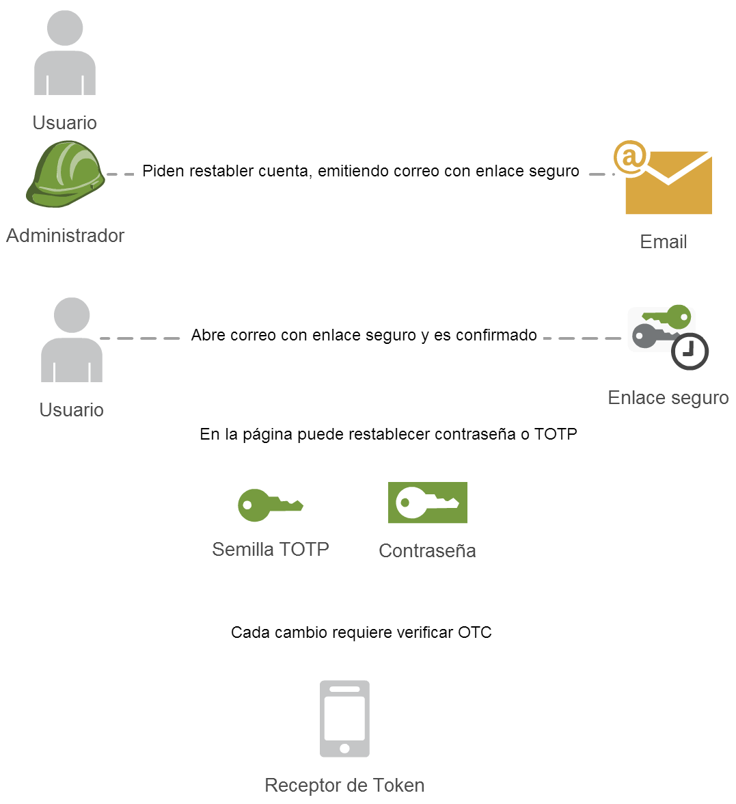

Restablecimiento
El restablecimiento de credenciales es similar al enrolamiento, puede ser originado desde la consola de administración o por el usuario.

El restablecimiento de credenciales es similar al enrolamiento, puede ser originado desde la consola de administración o por el usuario.